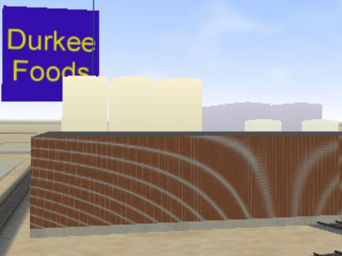
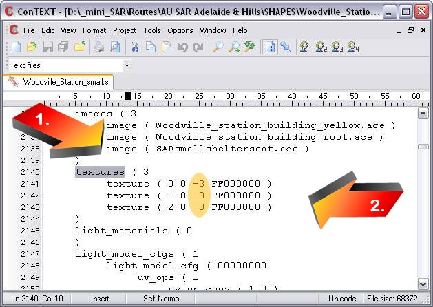
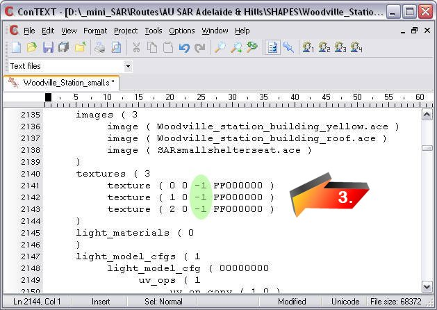
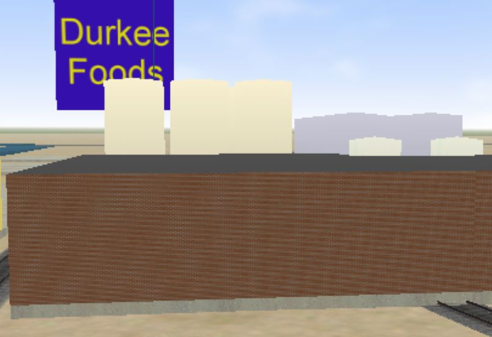

Getting Rid of Moiré Pattern by Altering the Shape File
by Scott Miller
A moiré pattern is an interference pattern created, for example, when two grids are overlaid at an angle, or when they have slightly different mesh sizes - see this illustration of the Moiré effect from Mathematik.com.
In MSTS, you will commonly see this effect on small repeating patterns such as this brick wall below:

There are two ways to minimise this effect:
- You can reduce the effect somewhat by using my AceIt utility (packaged with Route_Riter): select the "Use Mipmaps" option when creating the ACE file.
- Ultimately however, altering the error bias will optimise the shape: use a setting of -1, which appears to work well accross the board.
- Open an uncompressed version of the .S file in the Unicode-aware editor of your choice;
- Search for "textures" (arrow #1 below);
- The value(s) you need to change is in the third position in a texture definition (arrow#2 below);
- change the -3 to a -1 (arrow #3);
So......

becomes

- Save, quit (and recompress with Route_Riter, Zipper, Shape File Manager).
Once this is done, the appearance improves dramatically.
